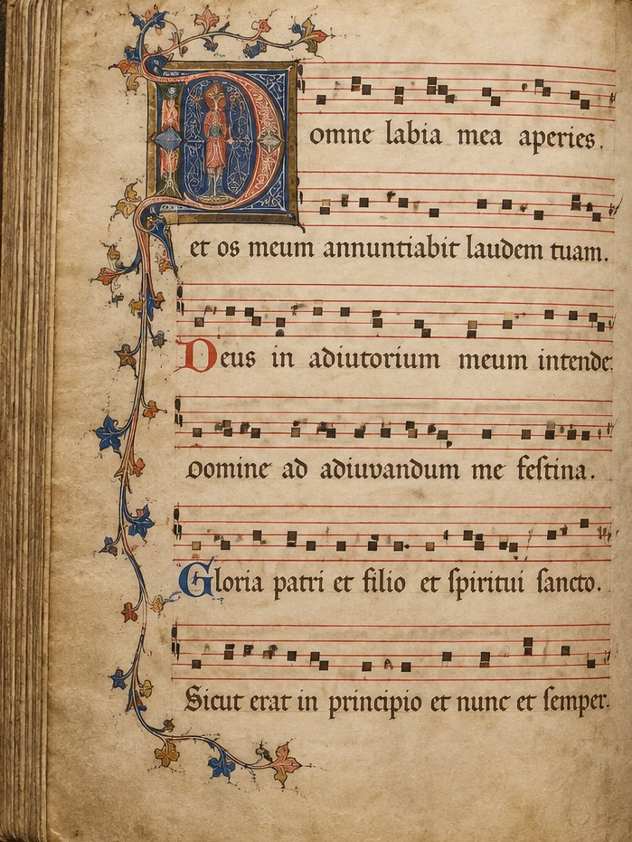

IIIF canvas navigation
Move across a supplied sequence of folios. The in-site viewer resolves the fixture manifest to its local demonstrator images.
A research project at Maynooth University
Material traces

Source records
These records model the way an edition can describe a manuscript, its repository, notation, material state and the works it witnesses without collapsing those things into a single object.
Browse all manuscript recordsMove across a supplied sequence of folios. The in-site viewer resolves the fixture manifest to its local demonstrator images.
Source records connect to the compositions they contain while maintaining an independent description.
Damaged witness, transcription and editorial reconstruction are deliberately distinguished.